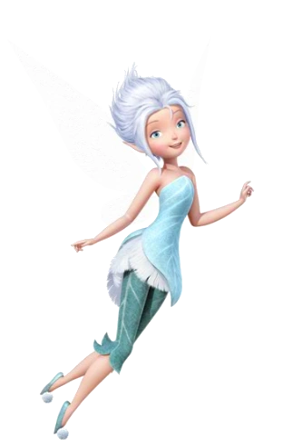

Oi Vihvih. Se tudo deu certo tu vai estar lendo isso de tarde, então, boa tarde. Vim te desejar um feliz aniversário. Tenho uma frase que carrego comigo desde a adolescência que é: "As melhores coisas acontecem quando menos esperamos". O jeito que a gente começou a se falar foi bem aleatório e bem divertido, e isso foi o suficiente pra eu sentir vontade de te fazer esse agrado. Você é uma pessoa muito divertida e leve de conversar. Tuas perguntas aleatórias só trazem um tom mais engraçado e divertido pra conversa. Mesmo te conhecendo a pouco tempo, eu me sinto bastante confortável enquanto conversamos. Eu imagino que esse teu jeito cativa qualquer um que se aproxima de tu. Espero que ninguém nunca te tire isso. Você também é uma pessoa bem esforçada, mesmo que viva com sono kkkkkk. Todo dia tu faz um percurso de 2h de ida e 2h de volta pra faculdade, e nesse meio tempo tu ainda tava estudando pra prova. Além disso tudo, ainda é linda, com um cabelo maravilhoso e um sorriso tão lindo quanto. Esse presente não é muito, mas é de coração, espero que goste. Novamente, parabéns pelo seu dia, te desejo felicidades não só pra hoje, mas pra todos os seus dias. Espero que continuemos nos falando por muito tempo, pq eu adorei te conhecer. Parabéns ❤️. (agora abra a caixa)
